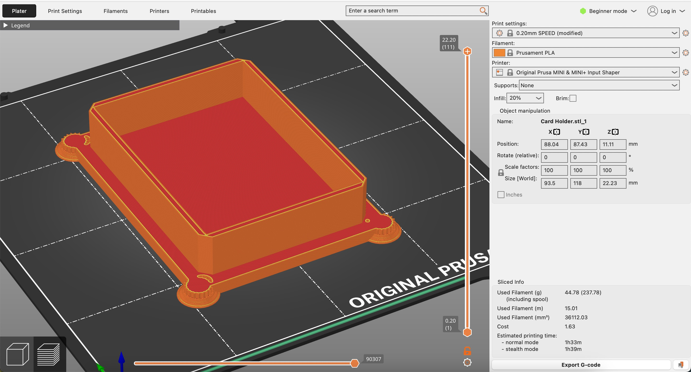
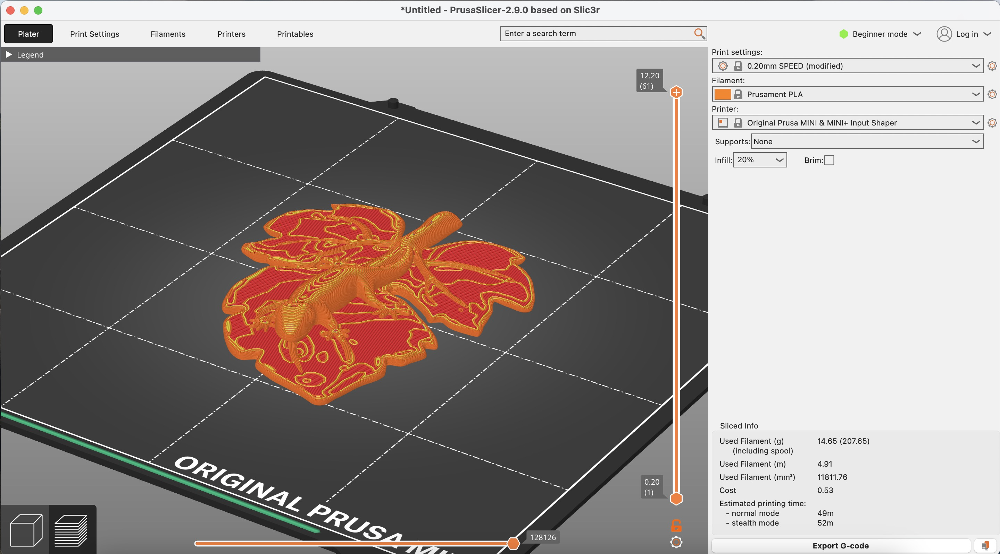

For Project 2, I learned how to remix and combine existing designs on CAD softwares TinkerCAD and Fusion. There’s definitely an ongoing learning curve to using these programs to their full capabilities, and some confusion and frustration around navigating these tools, but I’m slowly getting the hang of it.
TinkerCAD
I kind of get it
For my first remixing project, I explored designs on Thingaverse and found a file for a deck of cards holder. Because of the way the print is configured with the flat base printed first, I was trying to find small objects that I could incorporate into the card holder’s design without impacting its functionality. I ultimately decided to add some columns to the four corners of the holder as a design element. Below is a sketch of how I planned on adding the columns to the four corners.
SketchAfter sketching it up, I imported the card holder and column designs into TinkerCAD. The first step was adding columns to the top portion of the card holder. I rescaled the size of the columns to be smaller and then placed them along the four corners, making sure the columns were aligned parallel to each other and lay flush with the base of the card holder. After scaling and moving the columns, I grouped them together with the card holder design.
 Resizing the columns and fitting them in the corners of the container
Resizing the columns and fitting them in the corners of the container
 Placement of columns along the four corners of the top part of the container
Placement of columns along the four corners of the top part of the container
For the second part of this remixed design, I added columns to the bottom half of the card holder. I first used a cube shape and the “hole” feature to crop out the top portion of the column to maintain its base dimensions but reduce its height. From there, I went through a similar process of aligning the columns to each other and with the base of the card holder as well as grouping the items together.
 Removing the top portion of columns using the "hole" feature on TinkerCAD
Removing the top portion of columns using the "hole" feature on TinkerCAD
 Aligning bases of the columns to the bottom of the container
Aligning bases of the columns to the bottom of the container
The last thing I did in TinkerCAD was add text to one of the faces of the card holder. I typed in the text “Nerts” for a card game me and my friends play a lot, and reflected the text along the x and y axes so that it would read correctly when the top piece was placed on top of the bottom piece of the holder.
Adding text to side of the container Finished DesignFrom there, I exported the .STL file and opened it in PrusaSlicer, the CAM portion of this remixing process. Since the design was too big to fit on the print base, I split the design into two prints, one for the base piece and one for the top piece. In PrusaSlicer, I sliced the project with the settings listed below.
 Base of container Top of Container
Top of Container
One notable setting I had to turn on was the addition of supports on the build plate for the top piece of the design. This was important because I wanted to make sure the spades design on the bottom of the piece would print without any issues.
 Green regions are supports for design of top part of the container
Green regions are supports for design of top part of the container
 Printing! (top left and bottom right)
Printing! (top left and bottom right)
Overall, I’m very happy with the way this print turned out. The column design lay pretty flush with each other as it split from the top to the bottom piece. Also, I’m glad the two pieces fit into each other well with minimal gaps or movement in between. The functionality of the card holder is also nice–I tried putting in different-sized decks of cards and they all fit inside. One area of improvement in the design is that the fine details in the columns didn’t print super clearly. To fix this, I could modify the design of the column so the vertical details are thicker.
How the two pieces fit together, some imprecision in the column designIt was also nice showing my friends and they were very excited to use the card holder on our upcoming trip to upstate New York over February break where we’ll play many card games.
It fits a deck of cards! More pics of the final printFusion
I get this a lot less
For the second part of this project, I did a remixing design in Fusion. While doing the intro tutorials, I definitely had some confusion around all the tools that are offered and some difficulty with the accessibility of orienting myself and creating sketches in a 2D plane and components in 3D space. Even drawing a line had its challenges for me, multitasking clicking and dragging as well as typing in the exact dimension I wanted. It wasn’t super intuitive for me to click the dimension tool to update dimensions instead of clicking on the line itself to adjust. Some other struggles included making 3D objects in the wrong orientation, setting angles for connected lines, grouping components together. Also, I’m still a little confused about the different types of joints and their different purposes. Hopefully, I’ll get a better hand of things as I use Fusion more.
For my remixed design, I kept it simple aiming to combine a leaf and gecko I found on Thingaverse. I aimed to use the leaf as a base that the gecko could rest on.
 Sketch
Sketch
I first inserted the gecko into the leaf design file and did some rescaling and rotations to match how I positioned them in my sketch. I also made sure the base of the gecko touched the top of the leaf so the two designs would be incorporated together for the print.
Uploading both files in Fusion Final mixing of the designs using rotations, scaling, and changing placementAfter exporting the .stl file and opening it up in Prusa, I resized the design to fit on the printing plate and sliced the design with the settings listed below.
 Sliced project in PrusaI think my final print turned out solid and I’m glad the two components were connected together. One thing I noticed was that since the print was pretty small, the fine details in the curvature on the gecko and the leaf were kind of striated and terraced. I think if I printed this on a bigger scale, the changes in the curvature could be made more gradually across multiple layers so it would have less of a striped appearance. But for a quick one-hour print, I’m happy with how my first Fusion CAD project worked out.
 Final print
Final print